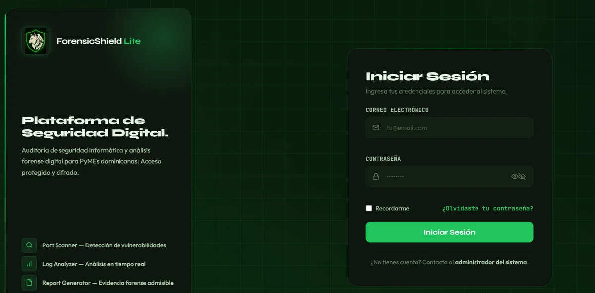
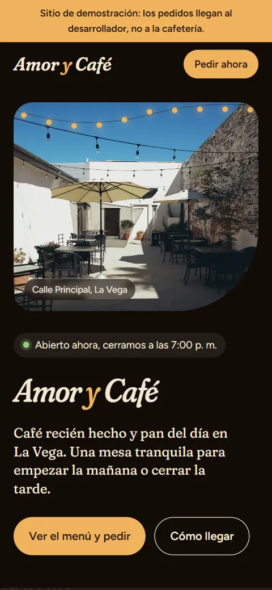
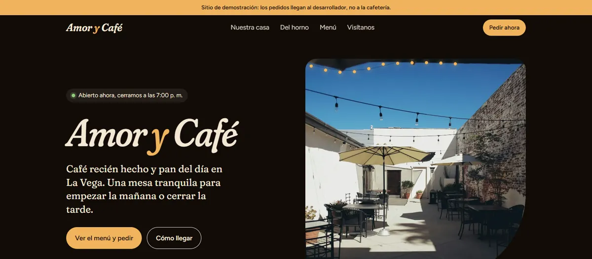
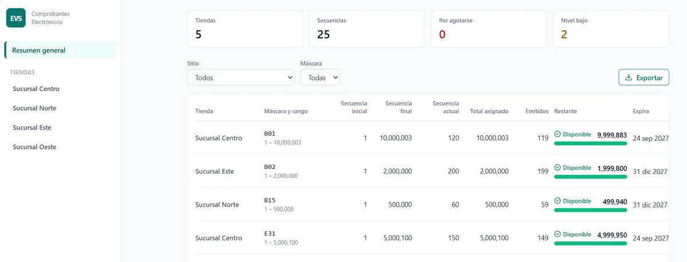

Páginas web para negocios
Sitios rápidos y adaptados a celular, con botón de WhatsApp para que tus clientes te escriban al momento.
>_ desarrollador python
Desarrollo con Python y FastAPI, y cuido la seguridad de lo que construyo desde el primer día.
4 proyectos reales Python y FastAPI Respuesta en menos de 24 horas


Soy Cesar Valenzuela, desarrollador y programador Python. He trabajado en proyectos reales con FastAPI, creando APIs y sistemas a medida.
Me estoy especializando en ciberseguridad y trabajo en remoto con clientes de cualquier país.
Lo que puedo construir para tu negocio.
Sitios rápidos y adaptados a celular, con botón de WhatsApp para que tus clientes te escriban al momento.
Menú con código QR para restaurantes y cafeterías, fácil de actualizar y con pedidos por WhatsApp.
Paneles, APIs con FastAPI y bases de datos para automatizar los procesos internos de tu empresa.
Reviso HTTPS, formularios, contraseñas y configuraciones comunes para que tu web no quede expuesta.
Entiendo tu negocio y lo que necesitas.
Te muestro una propuesta clara, con tiempos y precio.
Desarrollo tu web y te enseño avances.
Publicada, funcionando y con una guía para usarla.
Trabajos reales y demos. Las capturas usan datos de prueba.

Expediente 01
Una panadería y cafetería local no tenía página web. Su menú estaba en un PDF y los clientes hacían sus pedidos por WhatsApp dictándolos o enviando audios, lo que causaba errores y hacía perder tiempo.
Una web cálida que cuenta la historia del negocio, con un menú interactivo con buscador donde el cliente arma su pedido y lo envía completo por WhatsApp con un solo toque, sin dictar nada. Incluye horario, ubicación con enlace a Google Maps y botón para llamar.
Diseño y desarrollo completo, pensado primero para celular.
Expediente 02
Las pequeñas y medianas empresas dominicanas rara vez pueden pagar herramientas comerciales de auditoría de seguridad, y muchas no saben qué tan expuestos están sus sistemas.
Una plataforma modular de código abierto que reúne en una sola interfaz un escáner de puertos (detecta puertos abiertos, servicios y versiones de software), un analizador de amenazas que revisa URLs, posibles enlaces de phishing y archivos sospechosos mediante VirusTotal, y un generador de reportes en PDF con marca de tiempo.
Desarrollo completo como proyecto final de carrera en el ITESPF (2026).

Expediente 03
La empresa necesitaba gestionar sus comprobantes electrónicos de forma centralizada y con acceso controlado.
Una API REST con autenticación por tokens JWT y una base de datos estructurada con migraciones, preparada para conectarse al sistema de la empresa.
Desarrollo del backend completo (fases 1 y 2). El frontend está en desarrollo.
Expediente 04
En muchos negocios los clientes hacen fila sin saber cuánto les falta, y el personal no tiene control sobre la atención.
Una plataforma en la nube donde varios negocios gestionan su atención de forma independiente: sucursales, departamentos, servicios, filas, puestos de atención y usuarios, cada uno con sus propios datos y sin acceso a los de los demás.
Desarrollo del backend dentro de un equipo con revisión de código: 8 módulos y 40 endpoints, autenticación con JWT, contraseñas cifradas con bcrypt, validación de datos con Zod, límite de intentos en registro e inicio de sesión contra ataques de fuerza bruta, y control para que cada negocio solo acceda a su información. También la pantalla de registro del frontend.
Próximamente: la opinión de los negocios con los que trabajo.
sistema de gestión de turnos multi-negocio
API de comprobantes electrónicos
ITESPF
Harvard (en curso)
Las herramientas con las que trabajo a diario.
Cuéntame qué necesitas y te respondo en menos de 24 horas.

Noir
Asistente automático de Cesar Valenzuela
Hola, soy Noir. Estoy aquí para ayudarte. ¿Qué necesitas?
Respondo personalmente por WhatsApp en menos de 24 horas.